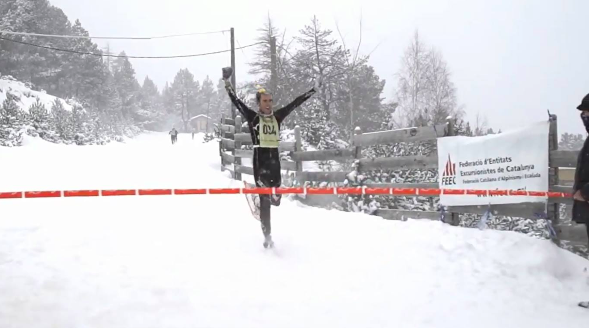

SUBIDA INTERNACIONAL
GRANADA-PICO VELETA
Montaña en Granada, Andalucía | Granada
50 km en 4 h. 11 min. 32 s.
DUATLÓ EN CIUTAT DE VIC
Vic, Catalunya | Barcelona
43 km en 1 h. 36 min. 4 s.
DUATLÓ DE LA
GARROTXA - CASTELLFOLLIT
Castellfollit
Catalunya | Girona
27 km en 58 min. 20 s.
37A RUTES DEL MONTSENY
Carretera en Granollers
Catalunya | Barcelona
158 km en 4 h. 36 min. 27 s.
TERRA DE REMENCES DE REMENCES
Sant Esteve d'en Bas
Catalunya | Girona
175 km en 5 h. 38 s.